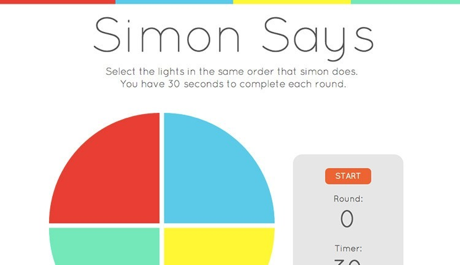

-
A web app to build flow charts
- Built with JQuery UI so that users can drag and drop building blocks to construct the flow charts.
- Used MongoDB to store flow charts and user settings.
- Developed the structure and design by using HTML, SVG, and CSS. And constructed with Node and Express.
-
Wiki website to create and update articles about great food spots in NYC

- Developed with Sinatra, Ruby and SQL. Allowed users to login, create a profile, save articles, and update articles. They can browse by article, author or category.
-
A single-page web game

- Designed a clean user friendly interface of the game built with Javascript and jQuery.
- Used asynchronism callback functions and timed events to make the buttons lightup.
- Implemented a PostgresSQL database to save highscores.